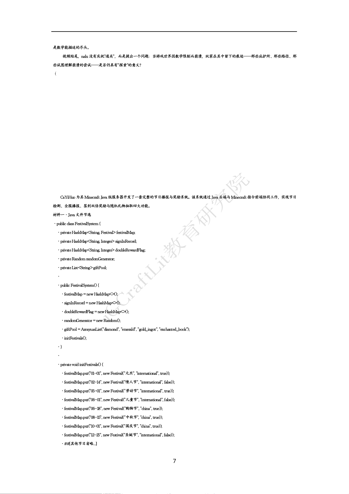

Minecraft·iGCraftLit2026
是数学能描述的尽头。
视频结尾，nalu 没有庆祝"通关"，而是提出一个问题：当游戏世界因数学限制而崩溃，玩家在其中留下的痕迹——那些庇护所、那些路径、那
些试图理解崩溃的尝试——是否仍具有"探索"的意义？
（1）下列关于 nalu 旅程中现象的解释，正确的是（3 分）
A．边境之地的地形扭曲是因为区块加载距离不足，导致远处地形以低精度渲染
B．平坦之地出现重复基地的根本原因是 Mojang 在极限坐标处预设了复制建筑以节省运算资源
C．条纹之地的虚假方块仍具备完整碰撞体积，玩家可以正常站立与挖掘
D．边缘之地的视觉抖动源于双精度浮点数的有效位数耗尽，坐标最小分辨单位扩大导致渲染坐标取整误差
（2）nalu 的旅程揭示了Minecraft 世界生成在极限坐标下的多重技术崩溃。请结合材料中三个阶段的具体现象，从以下两个维度
展开分析：
①维度一：世界生成机制的数学边界（7 分）
结合边境之地、平坦之地、条纹之地的地形异常，分析Perlin 噪声生成器与双精度浮点数在极限坐标下的失效模式，并说明这些
失效如何影响玩家的实际生存体验（如庇护所建造、怪物生成、资源获取等）。
②维度二：玩家应对技术崩溃的策略价值（7 分）
假设你是一名服务器管理员，需要在生存服中设置一个"世界边界探索"活动。参考nalu 旅程中的发现，设计一套玩家保护机制
（如防止坐标溢出导致的摔落、虚假方块误判等），并论证该活动对玩家理解Minecraft 底层机制的教育意义。
18.(本小题满分 17 分)
CaYiHuo 为其Minecraft Java 版服务器开发了一套完整的节日播报与奖励系统。该系统通过 Java后端与 Minecraft 指令前端协同工作，实现节日
检测、全服播报、签到双倍奖励与随机礼物抽取四大功能。
材料一·Java 文件节选
·public class FestivalSystem {
·privateHashMap<String, Festival> festivalMap;
·privateHashMap<String, Integer> signInRecord;
·privateHashMap<String, Integer> doubleRewardFlag;
·privateRandom randomGenerator;
·privateList<String>giftPool;
·
·public FestivalSystem() {
·festivalMap = new HashMap<>();
·signInRecord = new HashMap<>();
·doubleRewardFlag = newHashMap<>();
·randomGenerator = new Random();
·giftPool = Arrays.asList("diamond", "emerald", "gold_ingot", "enchanted_book");
·initFestivals();
·}
·
·privatevoid initFestivals() {
·festivalMap.put("01-01", new Festival("元旦", "international", true));
·festivalMap.put("02-14", new Festival("情人节", "international", false));
·festivalMap.put("05-01", new Festival("劳动节", "international", true));
·festivalMap.put("06-01", new Festival("儿童节", "international", false));
·festivalMap.put("06-18", new Festival("购物节", "china", true));
·festivalMap.put("08-15", new Festival("中秋节", "china", true));
·festivalMap.put("10-01", new Festival("国庆节", "china", true));
·festivalMap.put("12-25", new Festival("圣诞节", "international", false));
·##[其他节日省略...]